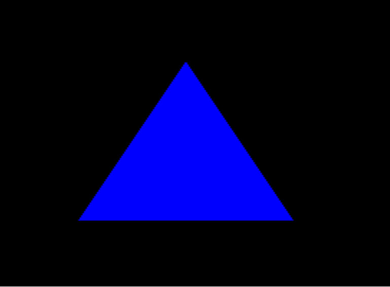

Lesson 4: Drawing a triangle
Introduction
We are almost there. A few more buffers and a draw call then we have our triangle.
We need a struct in our app that defines our vertices. They will contain a lot of floats. Ours will represent position and color. It will also have an input layout which gives semantics and byte offsets for the GPU.
The vertex format
//The vertex Structure
struct Vertex
{
D3DXVECTOR3 pos;
D3DXCOLOR color;
};
//The input-layout description
D3D11_INPUT_ELEMENT_DESC layout[] =
{
{"POSITION", 0, DXGI_FORMAT_R32G32B32_FLOAT, 0, 0, D3D11_INPUT_PER_VERTEX_DATA, 0},
{"COLOR", 0, DXGI_FORMAT_R32G32B32A32_FLOAT, 0, 12, D3D11_INPUT_PER_VERTEX_DATA, 0}
};
Creating a vertex buffer
This is not the same thing. Now we use an array of the struct we just made. Since we want to draw a triangle we just need 3 vertices. The buffer is actually a directx object.
Vertex v[] =
{
Vertex( 0.0f, 0.5f, 0.5f ),
Vertex( 0.5f, -0.5f, 0.5f ),
Vertex( -0.5f, -0.5f, 0.5f ),
};
D3D11_BUFFER_DESC vertexBufferDesc;
ZeroMemory( &vertexBufferDesc, sizeof(vertexBufferDesc) );
vertexBufferDesc.Usage = D3D11_USAGE_DEFAULT;
vertexBufferDesc.ByteWidth = sizeof( Vertex ) * 3;
vertexBufferDesc.BindFlags = D3D11_BIND_VERTEX_BUFFER;
vertexBufferDesc.CPUAccessFlags = 0;
vertexBufferDesc.MiscFlags = 0;
D3D11_SUBRESOURCE_DATA vertexBufferData;
ZeroMemory( &vertexBufferData, sizeof(vertexBufferData) );
vertexBufferData.pSysMem = v;
hr = d3d11Device->CreateBuffer( &vertexBufferDesc, &vertexBufferData, &triangleVertBuffer);
A few more bits
We need to put this in our init() method. These are the vertex structure and input layout. This has to be just right or it won't work at all. It holds byte offsets and semantics that the shaders will need to do their jobs.
//The vertex Structure
struct Vertex
{
D3DXVECTOR3 pos;
D3DXCOLOR color;
};
//The input-layout description
D3D11_INPUT_ELEMENT_DESC layout[] =
{
{"POSITION", 0, DXGI_FORMAT_R32G32B32_FLOAT, 0, 0, D3D11_INPUT_PER_VERTEX_DATA, 0},
{"COLOR", 0, DXGI_FORMAT_R32G32B32A32_FLOAT, 0, 12, D3D11_INPUT_PER_VERTEX_DATA, 0}
};
A few more COM objects
These add up quickly. Your scene's static geometry can all fit in one buffer that is marked as immutable (for efficiency) whereas modifiable geometry can be placed in another buffer.
These really should have gone up at the top but because I forgot to mention them. They are here.
ID3D11Buffer* triangleVertBuffer;
ID3D11VertexShader* VS;
ID3D11PixelShader* PS;
ID3D10Blob* VS_Buffer;
ID3D10Blob* PS_Buffer;
ID3D11InputLayout* vertLayout;
Cleaning up
Don't forget to add the proper entries into the cleanup() function.
triangleVertBuffer->Release();
VS->Release();
PS->Release();
VS_Buffer->Release();
PS_Buffer->Release();
vertLayout->Release();
Drawing
After all that hard work, drawing becomes easy.
void DrawScene()
{
float bgColor[4] = {(0.0f, 0.0f, 0.0f, 0.0f)};
d3d11DevCon->ClearRenderTargetView(renderTargetView, bgColor);
d3d11DevCon->Draw( 3, 0 );
SwapChain->Present(0, 0);
}
Ending Notes
I showed you more or less everything. All that would be left is using the context to set the buffers and shaders as well as the input layout and topology.
